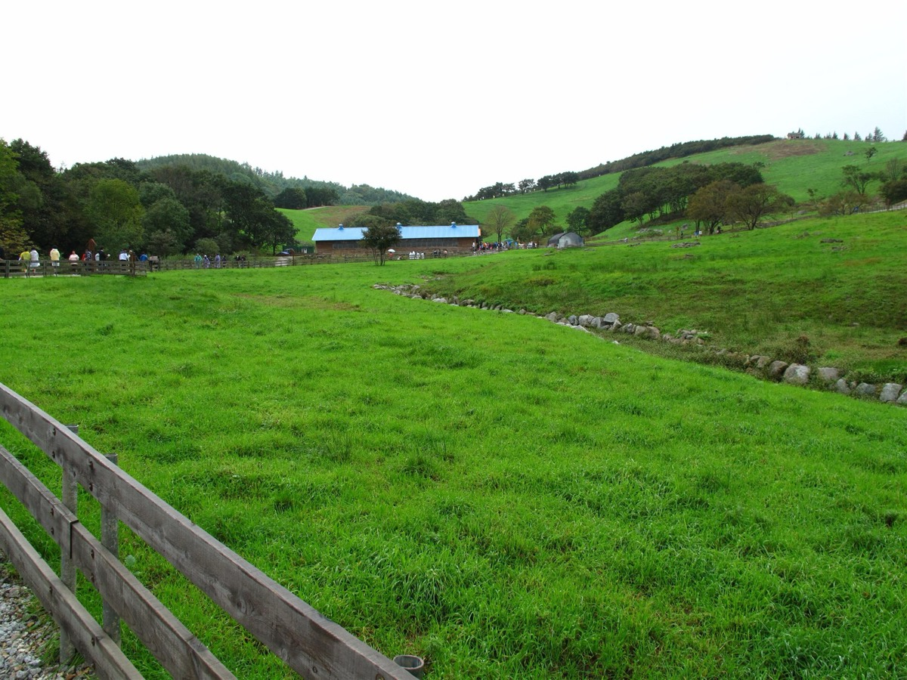
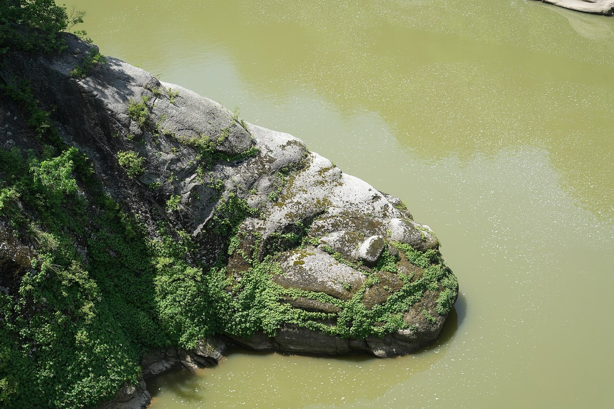
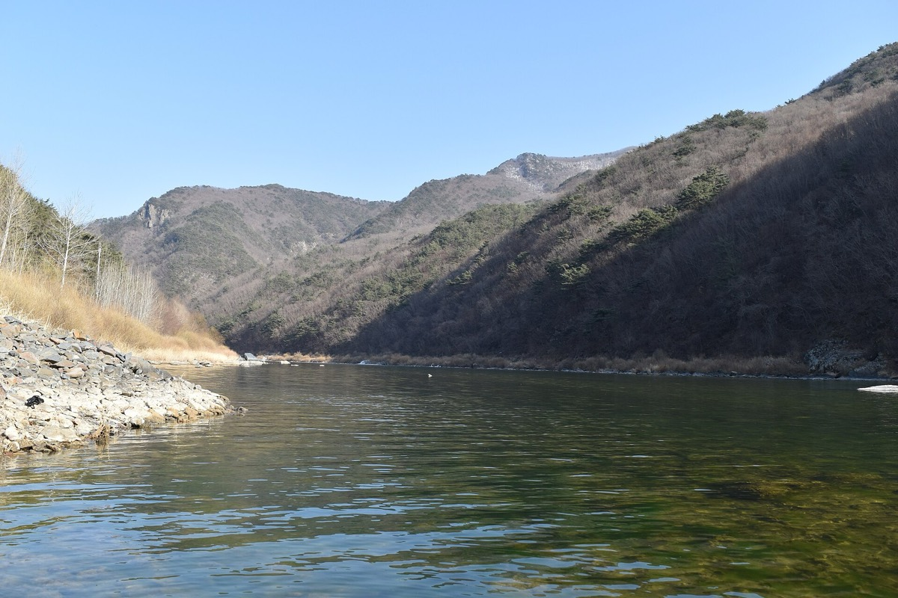
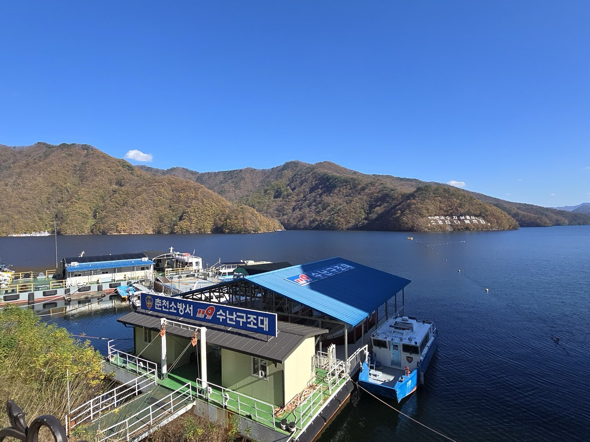
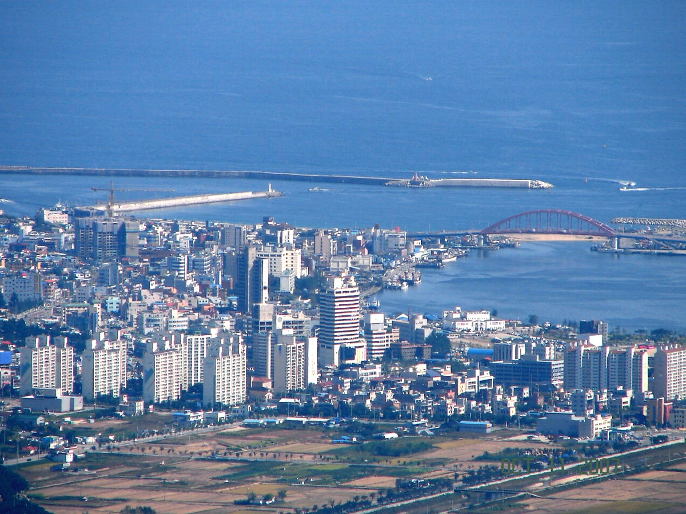
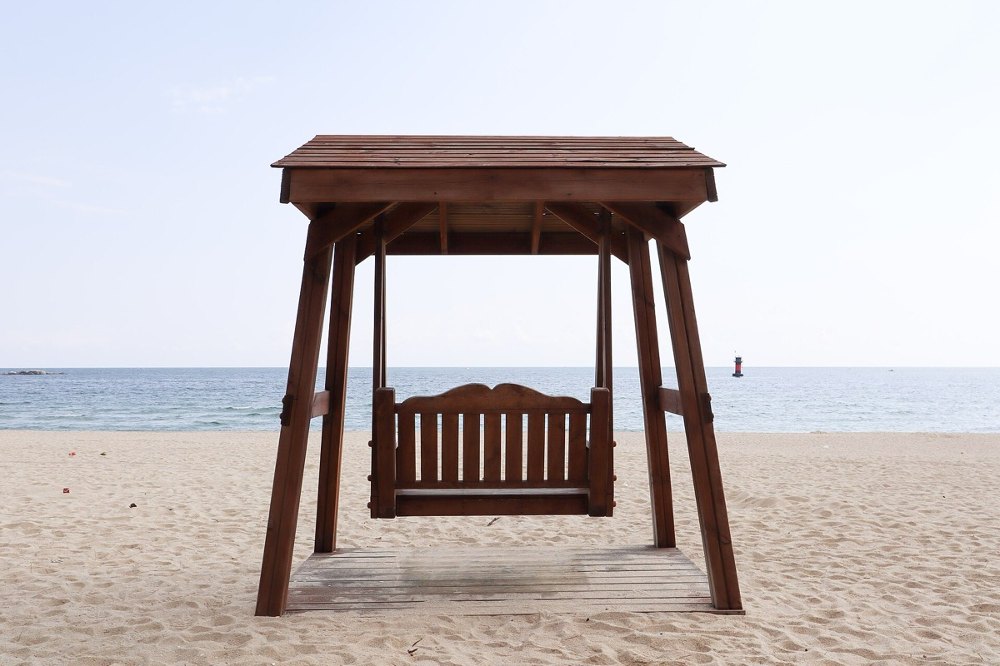
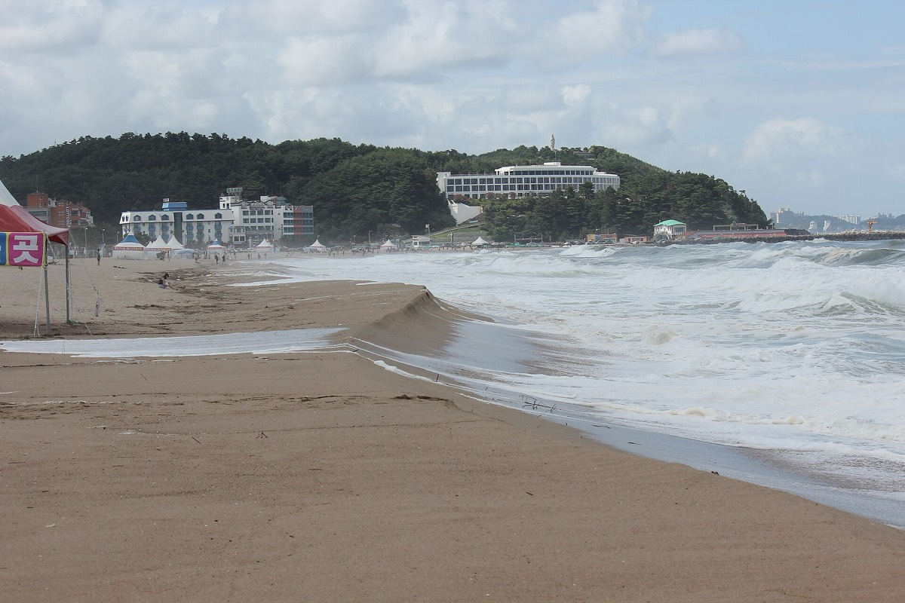
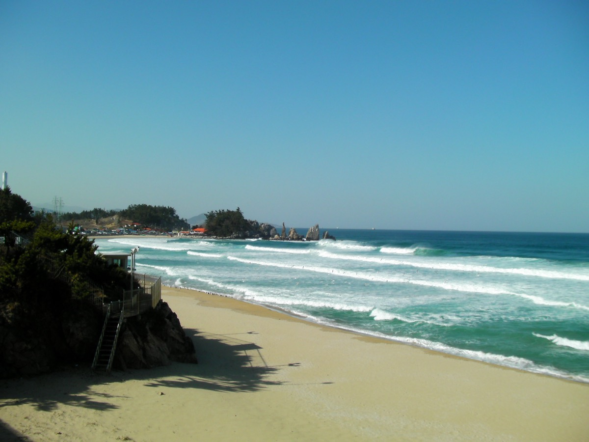
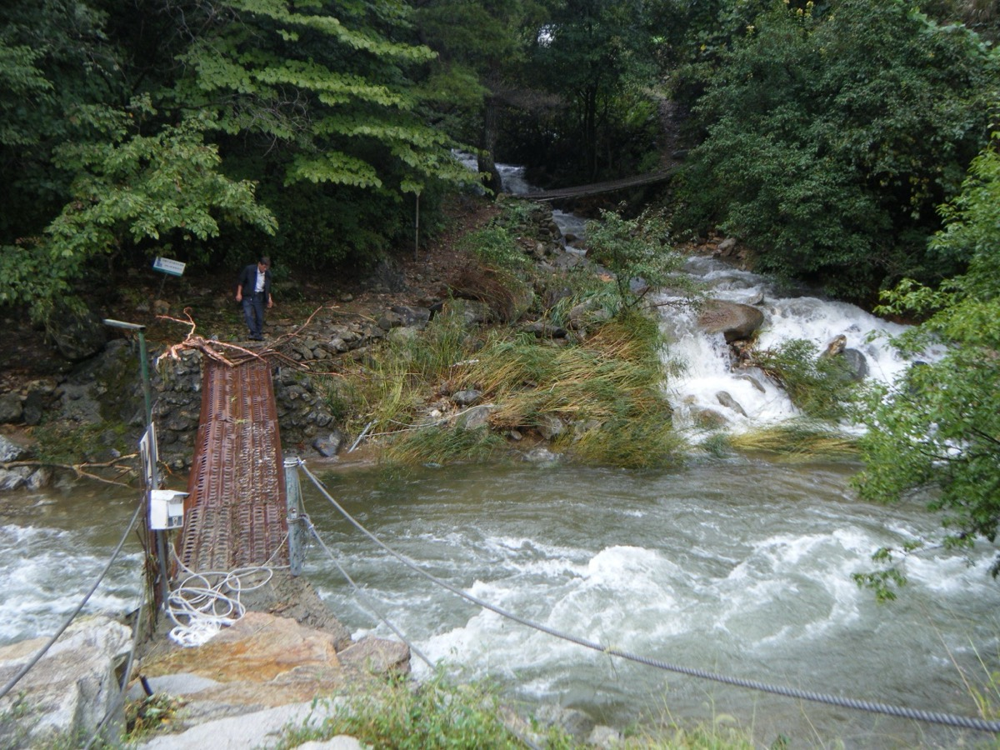

강원특별자치도 · 江原
안개는
유리가 된다
백두대간 등성이가 잇는 열여덟 표정을
화면으로 옮기는 법.
Place
대관령은 가르지 않고 잇는다
좋은 화면은 어디선가 옵니다. MA는 그 어딘가를 강원도에 두었습니다. 철원의 평야에서 태백의 고원까지, 양양의 파도에서 홍천의 숲까지, 여기 있는 색과 간격과 재질은 전부 한 땅에서 채집한 것입니다.
강원도 한가운데를 백두대간이 세로로 지납니다. 흔히 이 등성이를 두고 영서와 영동을 나눈다고 말하지만, 산은 무엇을 자르는 물건이 아닙니다. 산은 물을 나누어 보내는 지붕입니다. 같은 봉우리에 내린 비가 한쪽으로는 서쪽 강이 되고 한쪽으로는 동해가 됩니다. 갈라진 것이 아니라 뻗어 나간 것입니다.
태백에 가면 그게 눈에 보입니다. 한 도시 안에서 한강이 시작하고 낙동강이 시작합니다. 물길은 서로 다른 곳으로 흘러가지만 출발점은 하나입니다.

Translation
풍경이 화면이 되는 법
영감을 받았다는 말은 대개 아무것도 설명하지 못합니다. 어떤 풍경이 좋았다는 고백일 뿐, 그 풍경의 무엇이 화면의 무엇이 되었는지는 말해 주지 않기 때문입니다. 그래서 여기서는 무엇이 무엇이 되었는지를 하나씩 적었습니다. 이것이 이 페이지에서 가장 중요한 부분입니다.
-
안개 霧유리
안개는 가리지 않고 흐립니다. 뒤에 무엇이 있는지는 알지만 또렷하지는 않습니다. 그 상태를 화면으로 옮긴 것이 반투명한 유리입니다. 불투명한 막대는 뒤를 지우지만 유리는 뒤를 남겨 둡니다. 헤더가 내용을 덮지 않고 비추는 이유입니다.
-
능선 稜여백
산은 무엇을 더해서가 아니라 하늘을 비워서 모양을 갖습니다. 봉우리를 그리는 것은 봉우리가 아니라 그 위의 빈 하늘입니다. 그래서 이 화면은 정보를 배치하기 전에 간격부터 정했습니다. 섹션 사이가 넓은 것은 게을러서가 아니라 그게 형태이기 때문입니다.
-
이끼 苔단 하나의 색
겨울 강원에서 색을 가진 것은 이끼뿐입니다. 나머지는 회청색과 먹색입니다. 화면도 같게 두었습니다. 색이 나타나는 자리가 곧 눌러야 할 자리가 되도록, 색을 아껴서 비싸게 만들었습니다. 색이 흔해지면 아무것도 강조되지 않습니다.
-
서리 霜1px 선
서리는 아주 얇고, 빛이 닿는 각도에서만 보입니다. 이 화면의 경계선도 평소에는 없다가 내용이 유리 밑으로 들어갈 때만 나타납니다. 항상 그어져 있는 줄은 서리가 아니라 페인트입니다.
-
무연탄 炭먹색
태백과 정선이 지하에서 캐내던 검정입니다. 순수한 검정이 아니라 푸른 기가 도는 검정이었습니다. 이 페이지의 글자색이 #000이 아닌 이유이고, 오래 읽어도 눈이 덜 피로한 이유이기도 합니다.
-
겨울 동해 海색을 늘리지 않기
바다를 넣으면 파랑이 들어올 줄 알았습니다. 그런데 겨울 동해는 파랗지 않고 잿빛입니다. 산 쪽 안개와 같은 계열이었습니다. 땅을 정직하게 보면 색은 저절로 줄어들고, 멀리 떨어진 것끼리 오히려 이어집니다.

Drawings
화면의 재료로 풍경을 그리면
여섯 장 모두 사진이 아니라 CSS로 그렸습니다. 도형과 그라디언트와 선뿐입니다. 화면의 재료로 풍경을 그릴 수 있다면, 그 반대도 됩니다.
-
겹친 능선
가까울수록 짙고 멀수록 옅어서 거리가 곧 농도가 됩니다. 화면에서 위계를 만드는 방식과 같습니다.
-
다랑논
비탈에 사람이 그은 등고선입니다. 겨울에는 비어 있지만 선은 남습니다. 정직한 격자가 이 땅에 어울리는 이유입니다.
-
돌무지
밭머리에 쌓아 둔 돌, 고갯마루에 하나씩 얹은 돌. 의도를 가지고 놓인 몇 개가 넓은 빈 곳을 견디게 합니다.
-
서리
얇고, 각도가 맞을 때만 보입니다. 항상 그어져 있는 줄은 서리가 아니라 페인트입니다.
-
수평선
솔숲의 세로선이 가로선을 받칩니다. 가장 길고 흔들리지 않는 선이 나머지를 정렬시킵니다.
-
지층
해안에서 층이 절벽으로 잘려 단면을 드러냅니다. 평평해 보이는 화면에도 앞뒤가 있어야 합니다.

Regions
한 등성이가 만든 열여덟 표정
우열도 대립도 없습니다. 물이 어느 쪽으로 흐르는지에 따라 묶었을 뿐입니다. 각 지역에서 화면이 배울 것 하나씩만 가져왔습니다.
서쪽 비탈 물이 서해로 가는 열한 곳
- 춘천春川도청이 앉은 물의 도시. 아침마다 호수에서 올라온 안개가 산 아랫도리를 지운다.
- 원주原州치악산을 등진 강원 최대 도시. 능선 위 콘크리트 벽이 하루의 빛을 종일 받아낸다.
- 홍천洪川전국에서 가장 넓은 군. 넓다고 다 채워야 한다는 법이 없다는 걸 이 땅이 보여 준다.
- 횡성橫城날 선 봉우리 대신 완만한 구릉. 급한 데가 없는 지형.
- 평창平昌해발 700m의 고원. 높이가 달라지면 같은 계절도 다른 공기가 된다.
- 정선旌善굽이굽이 접힌 골. 접힌 곳이 있어야 평평한 곳이 평평해 보인다.
- 철원鐵原휴전선에 닿은 평야. 겨울 빈 논에 두루미가 앉고 그 위로 철책의 직선이 지난다.
- 화천華川북한강이 시작하는 자리. 시작점은 대개 작고 조용하다.
- 양구楊口산이 사방을 두른 분지. 테두리가 분명하면 안쪽이 비어도 흔들리지 않는다.
- 인제麟蹄내린천이 굽이치고 자작나무가 줄지어 선다. 반복은 장식이 아니라 구조다.
- 영월寧越남한강이 크게 돌아 나가는 물돌이. 직선만으로는 시선이 돌지 않는다.

동쪽 비탈 물이 동해로 가는 일곱 곳
- 강릉江陵시야를 가로지르는 것은 수평선 하나. 가장 길고 흔들리지 않는 선.
- 속초束草등 뒤가 1,700m 능선, 코앞이 0m 수면. 강원에서 낙차가 가장 큰 자리.
- 고성高城길이 더 북으로 가지 못하고 멈추는 곳. 경계가 분명해야 안이 안전해진다.
- 양양襄陽파도는 매번 다르지만 매번 온다. 늘 같은 자리에서 만나는 것이 신뢰가 된다.
- 동해東海무역항과 시멘트 공장의 회색. 관광엽서엔 없지만 실재하는 색.
- 삼척三陟석회암 층이 절벽으로 잘려 단면을 드러낸다. 평평해 보여도 앞뒤가 있다.
- 태백太白한강과 낙동강이 함께 시작하는 고원. 한 시대의 검정을 캐내던 곳.




Materials
여섯 색과 한 겹의 유리
예쁜 색에서 고르지 않았습니다. 춘천의 물안개, 태백의 무연탄, 겨울 동해의 잿빛에서 집어 왔고, 그중 색을 가진 것은 이끼 하나뿐입니다. 나머지 다섯은 사실상 무채색입니다. 그래서 이끼색이 나타나는 자리가 곧 눌러야 할 자리가 됩니다. 좁은 화면에서는 옆으로 끌어보세요.
- 겨울 안개 霧#EEF1F2춘천의 물안개
- 성엣장 氷#DBE2E4겨울 동해의 잿빛
- 먹색 산 山#1C2325태백의 무연탄
- 이끼 苔#4B6560유일한 색
- 돌 石#8A9296철원 평야의 돌
- 겨울 흙 土#5D6A6D영월 강가의 흙
- 유리 硝rgba 투과일곱 번째 재료
Concept
세 개의 기둥
-
間
Ma — 여백
겨울 다랑논이 돌무지 몇 개를 위해 논바닥을 비우듯, 무엇을 뺄지 먼저 정합니다. 여백은 안 채운 자리가 아니라 치운 자리입니다.
-
材
Material — 재료
콘크리트 위의 빛, 알루미늄의 온도, 픽셀의 밀도. 재료가 스스로 말하게 두면 장식을 얹을 이유가 사라집니다.
-
心
Mind — 사고
좋다는 감각을 언어로 쪼개는 훈련. "영감을 받았다"에서 멈추지 않고 무엇이 왜 좋았는지 문장이 될 때까지 파고듭니다.
Campus
산 속의 교실
원주, 치악산이 보이는 능선 위에 있습니다. 노출 콘크리트 벽이 하루의 빛을 받아내는 곳입니다. 콘크리트는 사진으로 보면 차갑지만 그 안에 서 있으면 차갑지 않습니다. 벽이 무표정해서 빛의 표정이 보이기 때문입니다.
배경이 무표정해야 내용이 표정을 가집니다. 안도 다다오가 빛을 설계하려고 벽을 설계했듯, 우리는 글이 읽히게 하려고 화면을 비웁니다.

강원특별자치도 원주시 · KTX 원주역, 시외버스터미널에서 셔틀
Admissions
지원하기
과제를 제출하면 지원이 완료됩니다. 작성 내용은 이 브라우저에 자동 저장됩니다.